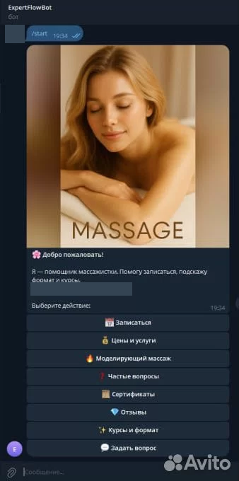
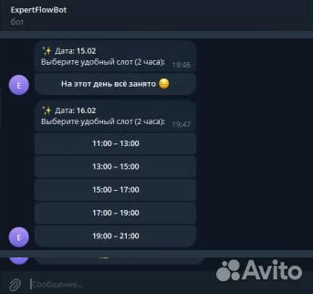
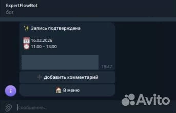
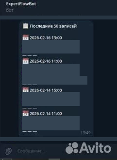

Запись к специалисту
Галерея · архив ExpertFlowBot · Показ по договорённости · Текущий запуск не подтверждён
В галерее можно пройти весь путь записи. На 15 февраля мест уже нет. Клиент выбирает 16 февраля и получает подтверждение на 11:00. Этот же час виден в списке специалиста.
Массажный проект mySoulRelax предназначен для выбора дня, свободного времени и сохранения записи. Его адрес — @mySoulRelaxBot. Живой запуск пока не подтверждён; показ — по договорённости.







